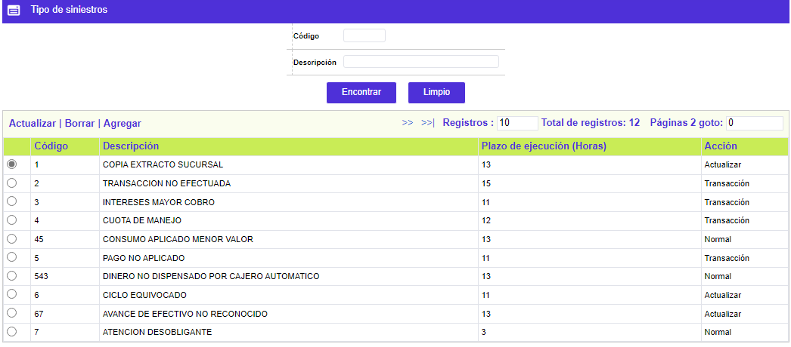
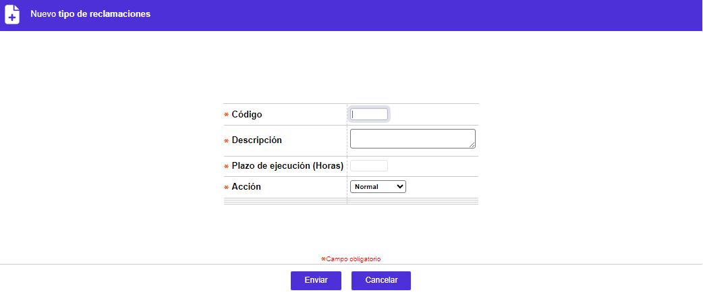
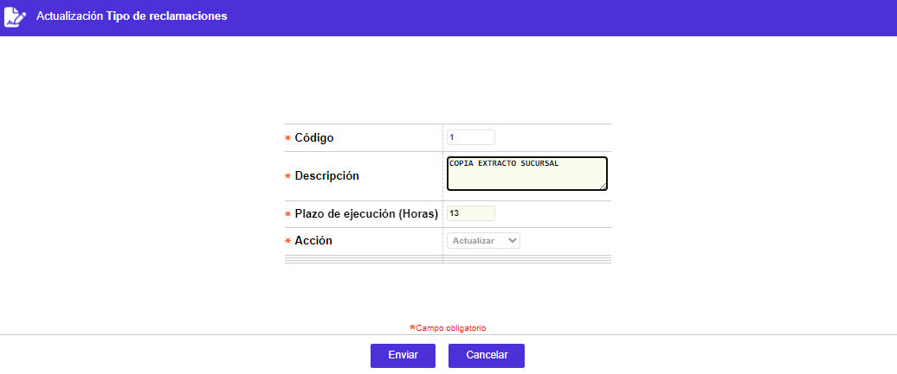

Tipos de reclamos |
Esta función habilita la consulta y/o mantenimiento de la tabla que almacena los diferentes tipos de reclamos que se requiere sean aplicados a los clientes de la entidad, clasificándolos en Normales, o que se requiera genere una transacción o novedad derivadas de dicho reclamo.
El formulario contiene las opciones Actualizar, Eliminar y Adicionar. Adicionalmente, cuenta con un filtro de búsqueda

Filtro: Se pueden realizar consultas a través de las siguientes opciones:
Código |
Campo alfanumérico de tres caracteres, que contiene el código del tipo de reclamo que se desea buscar |
Descripción |
En este campo alfanumérico de máximo 30 caracteres, se ingresa la definición asociada a cada código tipo de reclamo buscado |
Adicionar: Si el usuario invoca la opción Adicionar se despliega un formulario con los siguientes campos:

Código |
Campo alfanumérico de tres caracteres, obligatorio, que contiene el código asignado a cada tipo de reclamo el cual lo identifica dentro del sistema. |
Descripción |
Campo alfanumérico de 60 posiciones, obligatorio, en el cual se registra el nombre de cada tipo de reclamo asociado al respectivo código. |
Periodo máximo de ejecución |
Campo numérico de tres dígitos, obligatorio, en el cual se registra el número de horas en las cuales debe ser solucionado el reclamo para no estar con estado Vencido. Hay que tener en cuenta que para contar dichas horas, el sistema revisa el calendario parametrizado para la sucursal con código 0 (cero) en la opción de Estructura orgánica. |
Acción |
Campo con lista de valores obligatorio de la cual se selecciona entre las opciones Normal, Novedad o Transacción, que indicará si el reclamo debe generar manualmente una novedad al cliente o a la tarjeta, o una transacción a la tarjeta, o si es una inquietud del cliente que requiera de una solución por parte de la entidad. |
Actualizar: Si el usuario invoca la opción Actualizar se despliega un nuevo formulario en el cual los únicos campos modificables son: Descripción y Periodo máximo de ejecución.
